Neumann interior scattering problem
This tutorial introduces how to use the toolbox NIHU to solve a simple interior acoustic scattering problem.
The problem is scattering of an incident monopole wave field from the rigid walls of a shoe-box shaped room.
Contents
Surface and field point mesh
Generate a brick surface with given side lengths and division parameter.
L = [5 4 3]; % dimensions of the room [x y z] Le = .2; % lengt of boundary elements N = ceil(L/Le); % division parameter mesh = create_brick_boundary(L, N);
Check that the mesh is directed inward by plotting the normals with the toolbox function plot_elem_normals
figure; plot_mesh(mesh); plot_elem_normals(mesh); view(3);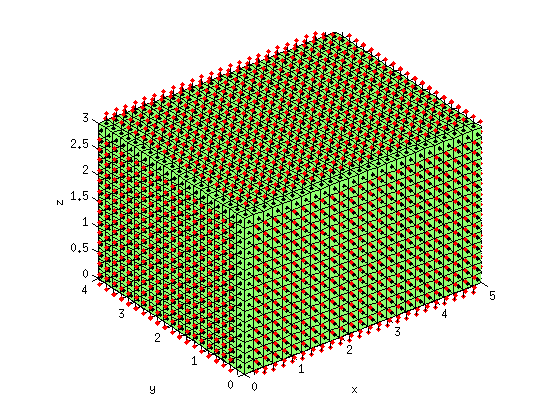
All the normals look outside, so the elements have to be flipped.
mesh = flip_elements(mesh); figure; plot_mesh(mesh); plot_elem_normals(mesh); view(3);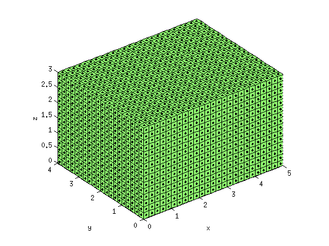
The field point mesh consists of three slabs parallel with the coordinate planes
C = [
.1 .1 .5
.9 .1 .5
.9 .9 .5
.1 .9 .5
];
field1 = create_slab(C*diag(L), N([1,2]));
field2 = create_slab(C(:,[2 3 1])*diag(L), N([3,1]));
field3 = create_slab(C(:,[3 1 2])*diag(L), N([2,3]));
field = join_meshes(field1, field2, field3);
figure;
plot_mesh(field); view(3);
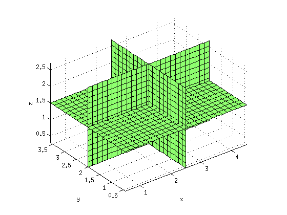 Incident wave field
The incident wave field is the field of a monopole source located inside the room. The incident pressure field 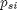 and pressure derivative field  is computed in all surface DOF. In the present example, constant boundary elements are used, and the DOF locations are the
element centers. The element centers and normals are obtained from the toolbox function centnorm, and the toolbox function incident computes the incident surface pressure and velocity field. For visualization purposes, the incident pressure field is computed
in the field points (vertices of the field point mesh).
is computed in all surface DOF. In the present example, constant boundary elements are used, and the DOF locations are the
element centers. The element centers and normals are obtained from the toolbox function centnorm, and the toolbox function incident computes the incident surface pressure and velocity field. For visualization purposes, the incident pressure field is computed
in the field points (vertices of the field point mesh).
The frequency is determined from the element length
ratio = 7; % elements per wavelength k = .9 * 2*pi/(ratio * Le); % wave number r0 = [.3 .6 .7] * diag(L); % monople source location [center, normal] = centnorm(mesh); [psi, qsi] = incident('point', r0, center, normal, k); points = field.Nodes(:,2:4); % extract field points (vertices) pfi = incident('point', r0, points, [], k); figure; plot_mesh(mesh, real(psi)); c = colorbar; ylabel(c, 'Real incident pressure'); view(3); figure; plot_mesh(field, real(pfi)); shading interp; c = colorbar; ylabel(c, 'Real incident pressure'); view(3);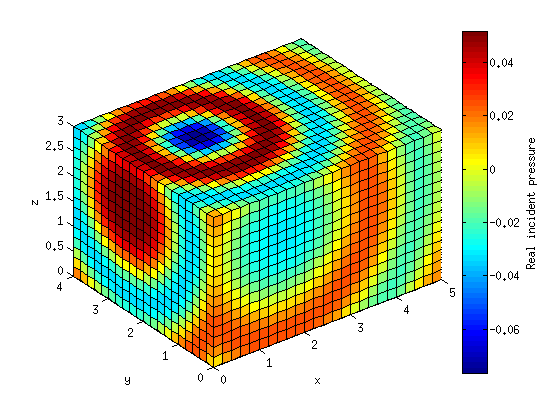 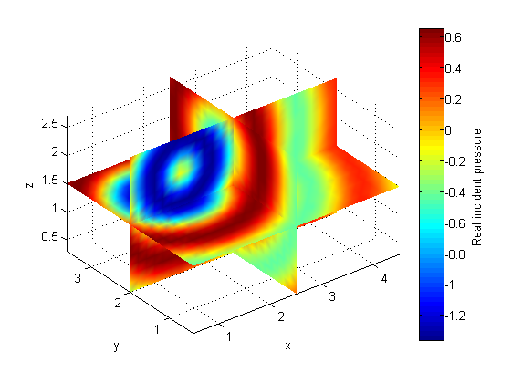
BEM matrices and solution
The BEM system matrices are generated by the toolbox function bemHG. The system of equations

is solved by matrix inversion. As a rigid scatterer is considered, the scattered velocity field is computed from the incident velocity as
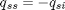
[H, G] = bemHG(mesh, k, 'const'); % Generate BEM matrices qss = -qsi; % Boundary cond. at a rigid boundary pss = H \ (G * qss); % solve the system
Field point pressure and total pressure field (post processing)
The scattered field point pressure 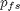 is computed from the scattered surface pressure 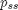 and velocity 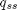 as
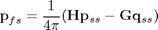
where the system matrices are computed by the toolbox function bemHG.
[H, G] = bemHG(mesh, k, 'const', points);
pfs = (H * pss - G * qss) / (4*pi);
The total pressure field in the field points and on the surface is computed as
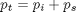
pst = psi + pss; pft = pfi + pfs; figure; plot_mesh(mesh, real(pst)); c = colorbar; ylabel(c, 'Real pressure'); view(3); figure; plot_mesh(field, real(pft)); shading interp; c = colorbar; ylabel(c, 'Real pressure'); view(3);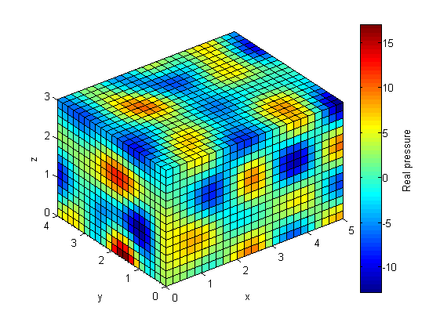 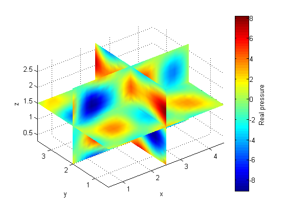